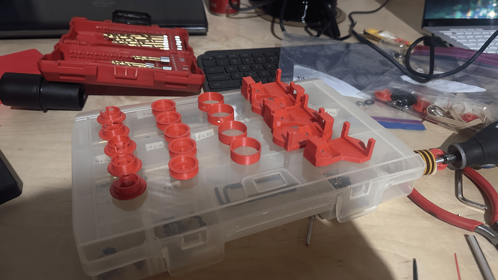
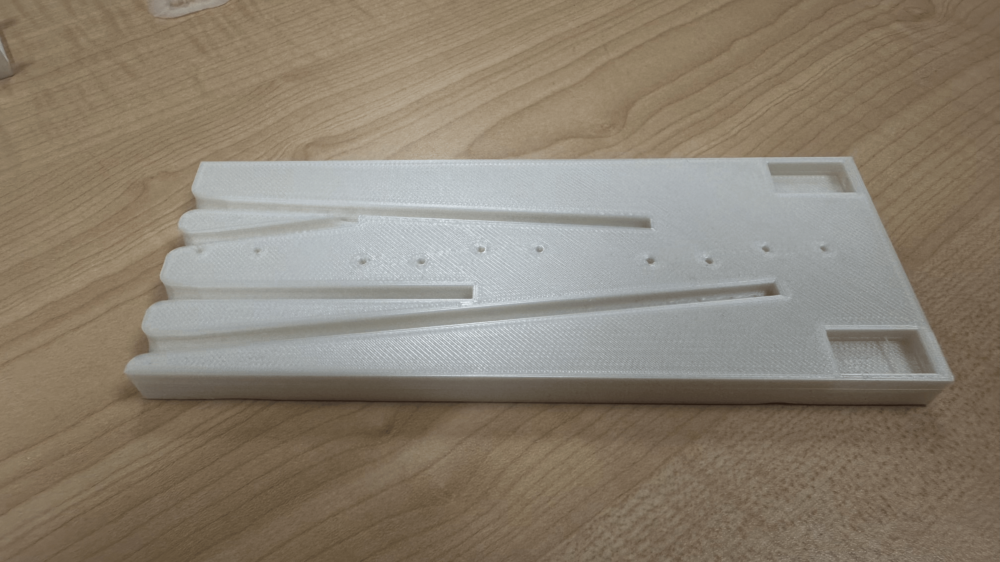
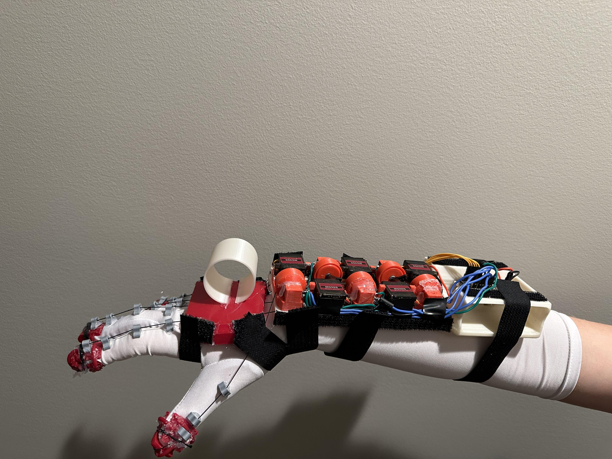
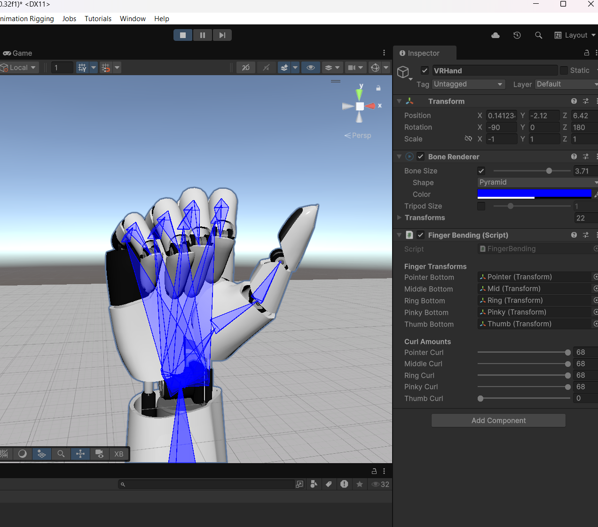
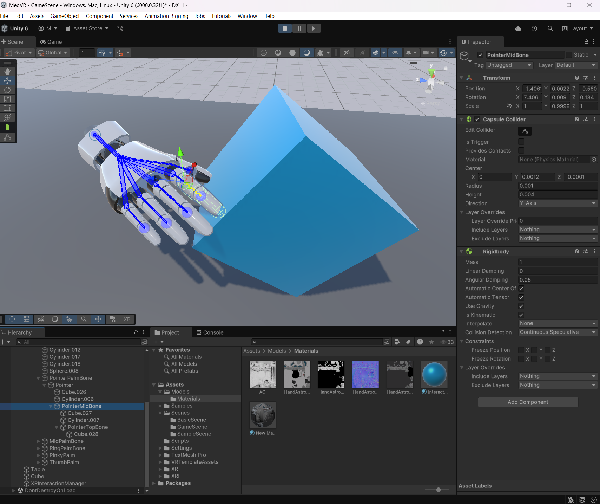

Designed as a PLTW Capstone project to address the global shortage and high costs of cadaver-based surgical training, MedVR is an affordable, modular haptic VR glove paired with a custom Unity simulation environment. By integrating servo-driven force feedback, Arduino control, and standard VR motion tracking, it provides medical trainees with realistic, risk-free tactile practice at a fraction of the cost of commercial alternatives.
Medical education relies heavily on hands-on practice for developing and retaining surgical skills, but traditional cadaver-based training is expensive, limited in availability, and difficult to scale. Commercial VR haptic gloves provide a digital alternative, but many systems cost thousands of dollars per pair. To address this, our team developed MedVR, an affordable haptic glove and custom Unity simulation environment designed for repeatable, risk-free medical training. The prototype was built for $146.95 using five servo motors for force feedback, potentiometers for real-time finger tracking, and an Oculus Quest controller for spatial tracking.
The final prototype successfully combined mechanical, electrical, and software systems into a functional training platform. Testing showed that the glove produced up to 42.2 N of restrictive force, achieved an average positional tracking error of just 0.508%, and maintained a communication latency of 7 ± 6 ms between Unity and the Arduino. Hardware was positioned along the forearm to improve weight distribution and reduce hand fatigue, resulting in an effective felt hand weight of approximately 356 grams.





Click any report below to view or download the full document.